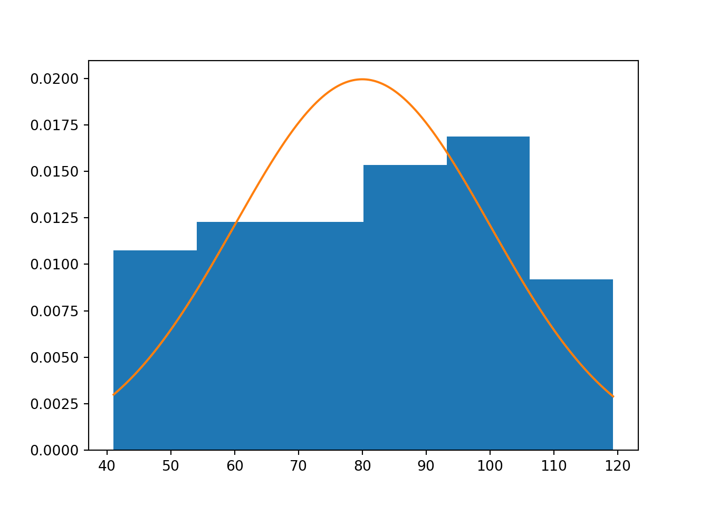
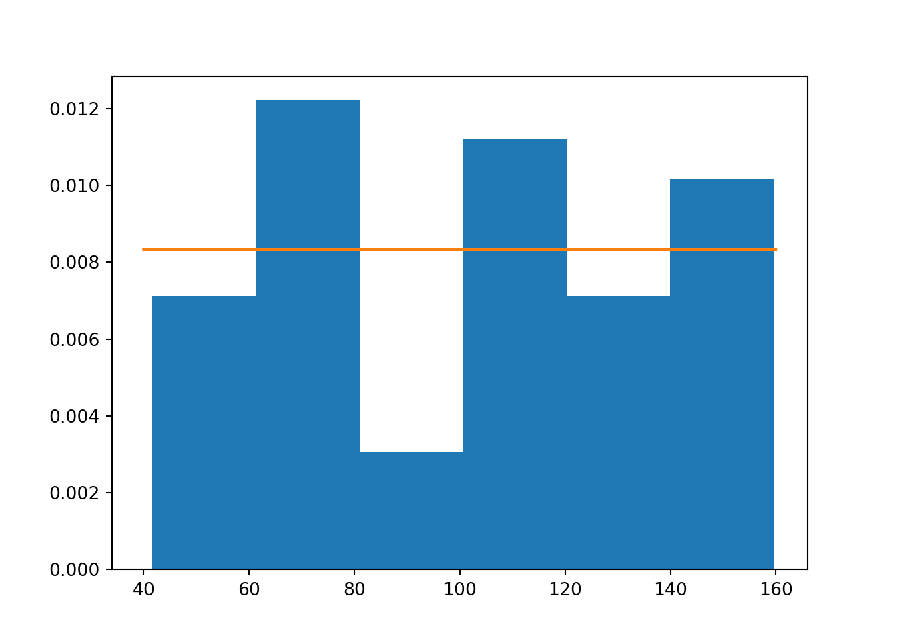

4 Eloszlások és Mintavételezés
4.1 Véletlenszám generálás és Mintavételezés
Minden programnyelv alapelemének számít egy olyan függvény, ami \(0-1\) értékek közötti véletlen számokat generál. Egész pontosan ezek a függvények úgy generálnak számokat, hogy azok \(0-1\) között minden értéket azonos valószínűséggel, tehát egyenletes eloszlással vehetnek fel.
Az ilyen \(0-1\) között egyenletes eloszlású véletlenszám generátorok minden programnyelv alapvető eszközei, és a Számítástudományból tanult lineáris kongruenciarendszereken alapulnak.
A \(0-1\) közötti teljesen véletlen számok generálásához Pythonban egy random c. csomagot kell importálni, és ennek a (nem meglepő módon) random névre keresztelt függvényével tudunk véletlen számokat dobálgatni.
## 0.0835365999143759Fenti kódsort futtatva nyilván mindenkinek más eredménye lesz, hiszen random számot generálunk. :) A lényeg, hogy a számunk \(0-1\) közötti!
Node, mit csinál ez a véletlenszám generátor statisztikus szemmel tekintve? Nos, ilyenkor ők egy olyan \(Y_i\) adatsorból húznak véletlenszerűen egy \(x\) számértéket, aminek az eloszlása \(0-1\) közötti egyenletes eloszlás. Ennek a matematikai jelölésrendszere: \(Y_i \sim U(0,1)\). Az \(U\) onnan jön, hogy az egyenletes eloszlás in English uniform distribution.
Húzzunk akkor most ebből a \(Y_i \sim U(0,1)\) adatsorból \(50\) db véletlen értéket, és tároljuk el az eredményeket egy Python list objektumban! Azaz, vegyünk a \(U(0,1)\) eloszlásból egy \(n=50\) elemű mintát!
Technikailag úgy kell eljárnunk, hogy létrhozunk egy üres listát Pythonban, és az append metódusa segítségével föltöltjük \(50\) db random \(0-1\) közötti számmal.
SzerencsétlenVéletlenek = [] # üres lista létrehozása
for index in range(50):
SzerencsétlenVéletlenek.append(random.random()) # véletlen szám hozzáadása a listához
SzerencsétlenVéletlenek## [0.20172128382809862, 0.09479595649849393, 0.6698747104719925, 0.8956647982844693, 0.7981980373243391, 0.5325420047337364, 0.32099738604312156, 0.8793569569671966, 0.2237553425863259, 0.6994164757181959, 0.8124495918464295, 0.5981312838862204, 0.512218385578927, 0.04131444481802393, 0.6287054199489052, 0.5095647594779015, 0.881420068059437, 0.046952567697298164, 0.8410263817389744, 0.8182175885573786, 0.8087865997254338, 0.10625474314978511, 0.09292059678678222, 0.3886262411434699, 0.3228357704041285, 0.7195517714641659, 0.7122924632282822, 0.20385541216561887, 0.2177449278629272, 0.3208564301509915, 0.42622900978730627, 0.0841458344341488, 0.08598935044164491, 0.1379777697916822, 0.3456193818752905, 0.9072996403972144, 0.7452554509301174, 0.9996774420620634, 0.17712159895068236, 0.4045862018813663, 0.5733491323095221, 0.4742340930028196, 0.41846981203731193, 0.3235337962611794, 0.5942122373429548, 0.7800302571156309, 0.5668389118694378, 0.44812482678280396, 0.5368203653506455, 0.6224324281452982]Itt is van az \(50\) szép kicsi véletlen számom. Nyilván ezek megint mindenkinek más értékek. :)
Következő lépésben ezt az \(50\) elemű mintát transzformáljuk át olyanná, hogy ne egy \(U(0,1)\) eloszlásból, hanem mondjuk egy \(U(40,160)\) eloszlásból származó minta! Magyarul, az kéne, hogy ez az \(50\) véletlen szám, ne \(50\) db \(0-1\) közötti véletlen szám, hanem \(50\) db \(40-160\) közötti véletlen szám legyen!
Ezt a következőképpen tudjuk elérni:
- Ha a \(0-1\) közti véletlenszámokat megszorozzuk \(160-40=120\)-szal, akkor \(0-120\) közti véletlen számok lesznek.
- Ha a \(0-120\) közti véletlen számokhoz hozzáadunk \(40\)-et, akkor \((0+40)\) és \((120+40)\) közti, azaz \(40-160\) közti véletlen számok leszenek.
Ahhoz, hogy ezt technikailag kivitelezni tudjuk a s listánkat először numpy tömbbé kell konvertálni. De utána elég egyszerűen menni fog a dolog.
import numpy as np
SzerencsétlenVéletlenek = np.array(SzerencsétlenVéletlenek)
SzerencsétlenVéletlenek = (SzerencsétlenVéletlenek * (160-40)) + 40
SzerencsétlenVéletlenek## array([ 64.20655406, 51.37551478, 120.38496526, 147.47977579,
## 135.78376448, 103.90504057, 78.51968633, 145.52283484,
## 66.85064111, 123.92997709, 137.49395102, 111.77575407,
## 101.46620627, 44.95773338, 115.44465039, 101.14777114,
## 145.77040817, 45.63430812, 140.92316581, 138.18611063,
## 137.05439197, 52.75056918, 51.15047161, 86.63514894,
## 78.74029245, 126.34621258, 125.47509559, 64.46264946,
## 66.12939134, 78.50277162, 91.14748117, 50.09750013,
## 50.31872205, 56.55733238, 81.47432583, 148.87595685,
## 129.43065411, 159.96129305, 61.25459187, 88.55034423,
## 108.80189588, 96.90809116, 90.21637744, 78.82405555,
## 111.30546848, 133.60363085, 108.02066942, 93.77497921,
## 104.41844384, 114.69189138])Olybá tűnik a foglalkozásunk elérte célját: tényleg nincs itt \(40\)-nél kisebb és \(160\)-nál nagyobb szám! :)
Nézzük meg, hogy mennyire egyenletes eloszlásúak a generált \(U(40,160)\) eloszlású számaink! Rajzoljuk ki a hisztogramot!
Ehhez kelleni fog a matplotlib csomag hist függvénye is. Eza függvény lényegében a numpy csomag histogram függvénye, de listákra csak ezt lehet alkalmazni. Ugyebár még nem mentettük a dolgokat pandas data frame-be, ezért ilyen körülményes kicsit a hisztogram rajzolás.
Mivel \(50\) adatot generáltunk, így a hisztogramhoz \(k=6\) osztályköz kell a \(2^k \geq N\) szabály alapján (\(2^6=64\))
Mit is kéne látni ezen a hisztogramon? Hát általánossában az \(U(a,b)\) eloszlás, azaz az \((a,b)\) intervallumon egyenletes eloszlás sűrűségfüggvénye \(f(x) = \frac{1}{b-a}\), hiszen a sűrűségfüggvény helyettesítési értéke az egy konkrét \(x\) érték bekövetkezési valószínűsége az \(U(a,b)\) eloszlásban, \(P(Y_i=x)\). Ami az egyenletes eloszlás esetén minden \(x\)-re \(a-b\) között ugyan annyi, nevezetesen “1 per az \((a,b)\) intervallum hossza!
Esetünkben tehát az \(U(40,160)\) eloszlás sűrűségfüggvénye az \(f(x)=\frac{1}{160-40}=\frac{1}{120}=0.0083\) magasságban futó vízszintes egyenes. Vagyis a hisztogramnak minden \(x\) értékre kb. ugyan akkora gyakoriságot kell mutatnia, ami azért szemmel láthatóan nem így van!
Rajzoljuk csak ki a hisztogramot density = True beállítással és véssük fel rá az \(U(40,160)\) eloszlás sűrűségfüggvényét! Ezt az ábrát hasonlóan lehet elkészíteni, mint ahogy a normális eloszlás sűrűségfüggvény illeszkedését vizsgáltuk garfikusan a Tesla árváltozások hisztogramjára az 3.2.3. fejezet végén.
Sőt, természetesen a scipy csomag stats névterének uniform.pdf függvényével is ki tudjuk számolni az \(U(40,160)\) eloszlás konstans \(f(x)=0.0083\)-as sűrűségfüggvényét, ahogy az 1. heti anyagban kiszámoltuk a normális eloszlás sűrűségfüggvény \(f(x)\) értékeit a norm.pdf függvénnyel. Arra kell figyelni az uniform.pdf függvénynél, hogy a loc nevű paraméterben kell megadni az \(U(a,b)\) eloszlás alsó határát, azaz \(a\)-t, míg a scale paraméterben a terjedelemét, azaz az \(a-b=160-40=120\)-at!
import scipy.stats as stats
eloszlás_alsó_határ = 40
eloszlás_felső_határ = 160
eloszlás_terjedelem = eloszlás_felső_határ - eloszlás_alsó_határ
Hisztogram = plt.hist(SzerencsétlenVéletlenek, bins = 6, density = True)
x_tengely = np.arange(eloszlás_alsó_határ, eloszlás_felső_határ, 0.01)
y_tengely = stats.uniform.pdf(x = x_tengely, loc = eloszlás_alsó_határ,scale = eloszlás_terjedelem)
plt.plot(x_tengely, y_tengely)
plt.show()Láthatjuk azért, hogy az \(50\) elemű minta tapasztalt gyakoriságai nem annyira tükrözik az egyenletes eloszlás vízszintes \(f(x) = 0.0083\) magas sűrűségfüggvényét, de azért többnyire a függvény vonala körül mozognak. Azt pedig már lecsekkoltuk, hogy a vgenerált minta minden értéke tényleg a \((40,160)\) intervallumban található, de ez most szépen látszik a hisztogram \(x\) tengelyén is.
Tehát, sikeresen eltranszformáltuk az \(U(0,1)\) eloszlású \(50\) elemű mintánkat \(U(40,160)\) eloszlásúvá. Mindjárt látjuk, hogy az \(U(0,1)\) eloszlású véletlen számokat nem csak egy másik egyenletes \(U(a,b)\) eloszlásúvá, hanem tetszőleges eloszlásúvá is tudjuk tarnszformálni!!
4.1.1 A mintagenerálás általános elve
Gondolkozzunk el azon, hogyan is lehet formalizálni azt a képletet, amivel az \(U(0,1)\) eloszlású véletlen számokból U(a,b) eloszlású véletlen számokat csináltunk!
Ugyebár a generált számot megszoroztuk az \((a,b)\) intervallum hosszával, és hozzáadtuk az alsó határt, \(a\)-t. Azaz formálisan azt mondhatjuk, hogy ha \(y \sim U(0,1)\), akkor \(z = y \times (b-a) + a \sim U(a,b)\).
De honnan is jön ez a képlet? Gondoljunk bele, hogy \(U(a,b)\) eloszlás esetén hogyan is számolunk ki egy \(P(Y_i < x)\) “alá esési” valószínűséget? Azaz, mi a \(\int_{-\infty}^x{\frac{1}{b-a}}dx\) improprius integrál eredménye?
Ez azért nem olyan bonyi vállalkozás, mint mondjuk egy normális eloszlás esetén kiszámolni a cuccot, hiszen mivel \(a\) alatt az \(a-b\) közötti egyenletes eloszlásban \(0\) valószínűséggel lehetnek értékek, így az improprius integrálunk rögtön határozott integrállá válik:\(\int_a^x{\frac{1}{b-a}}dx\). Ezzel pedig már könnyen elbánunk, hiszen az integrálandó függvényben nincs is benne a függvény változója, az \(x\), tehát konstans függvényről van szó: \[\int_a^x{\frac{1}{b-a}}dx=\left[\frac{x}{b-a}\right]_a^x=\frac{x}{b-a}-\frac{a}{b-a}=\frac{x-a}{b-a}\]
Az eredmény szemléletesen persze az alábbi téglalap területe, hiszen a két oldal hossza \(oldal_1=x-a\), illetve a sűrűségfüggvény maga \(oldal_2=f(x)=\frac{1}{b-a}\) és a téglalap területe \(T=oldal_1 \times oldal_2 = (x-a) \times\frac{1}{b-a} = \frac{x-a}{b-a}\)

Szóval, ha véletlenszerűen húzok egy \(Y_i\) számot az \(U(a,b)\) eloszlásból, akkor annak a valószínűsége, hogy \(x\)-nél kisebb értéket kapok nem más, mint \(P(Y_i < x) = \frac{x-a}{b-a}\).
Nagyon jó. Akkor, nézzük meg mi most az inverz függvény az egyenletes eloszlásban! Azaz hogyan válaszolom meg azt a kérdést mi szerint: Mi az az érték, aminél csak \(5\%\) valószínűséggel kapok kisebb értéket egy \(U(a,b)\) eloszlásban?
Ugye ekkor az \(P(Y_i < x) = \frac{x-a}{b-a}\) összefüggésből kéne kifejeznem \(x\)-et, ami aránylag könnyű művelet: \[x=P(Y_i < x) \times (b-a) + a\]
Hoppácska! Amit kaptunk az gyakorlatilag ugyan az a formula, amivel a \(y \sim U(0,1)\) eloszlásból \(z \sim U(a,b)\) eloszlást csináltunk: \(z = y \times (b-a) + a\)
Tehát, általánosságban azt az eredményt kapjuk, hogy ha egy \(U(0,1)\) eloszlású véletlen számra \(P(Y_i < x)\) valószínűségként tekintek, és berakom azt egy tetszőleges eloszlás inverz függvényébe, és megkeresem a hozzá tartozó \(x\) értéket, akkor amit kapok eredményül az olyan eloszlású véletlen szám lesz, mint amilyen eloszlás inverz függvényébe beírtam az \(U(0,1)\) eloszlású véletlen számot!!
Ugyebár simán tekinthetek egy \(0-1\) közötti véletlenszámra \(P(Y_i < x)\) valószínűségként, hiszen minden valószínűség egy \(0-1\) közötti szám. :)
Nézzük is meg az elvet a gyakorlatban! Ugye a scipy csomagban minden eloszlás inverz függvényét a ppf rövidítésű függvénnyel számoltuk ki (lásd 3.2.5. fejezetben).
eloszlás_alsó_határ = 40
eloszlás_felső_határ = 160
eloszlás_terjedelem = eloszlás_felső_határ - eloszlás_alsó_határ
# Leürítjük a korábbi véletlenszámaink listáját és új üres listát hozunk létre
SzerencsétlenVéletlenek = []
# 50 db U(0,1) eloszlású szám generálása
for index in range(50):
SzerencsétlenVéletlenek.append(random.random()) # véletlen szám hozzáadása a listához
# U(40,160)-á transzformálás inverz függvénnyel
SzerencsétlenVéletlenek = stats.uniform.ppf(
SzerencsétlenVéletlenek,
loc = eloszlás_alsó_határ,
scale = eloszlás_terjedelem)
# Eredmény ellenőrzése hisztogramon
Hisztogram = plt.hist(SzerencsétlenVéletlenek, bins = 6, density = True)
x_tengely = np.arange(eloszlás_alsó_határ, eloszlás_felső_határ, 0.01)
y_tengely = stats.uniform.pdf(x = x_tengely, loc = eloszlás_alsó_határ,scale = eloszlás_terjedelem)
plt.plot(x_tengely, y_tengely)
plt.show()
E voilá: siker! Az értékek \(40-160\) között mozognak, és a generált minta gyakoriságai kb. az \(U(40,160)\) eloszlás \(f(x)\) sűrűségfüggvénye körül ingadoznak!
4.1.2 Nem egyenletes eloszlású minták generálása
Na, akkor abban bízunk, hogy az egyenletes eloszlás esetében megfigyelt trükk működni fog más eloszlásokra is.
Tehát, ha egy \(U(0,1)\) eloszlású véletlen számot berakom egy tetszőleges eloszlás inverz függvényébe, akkor amit eredményül kapok az olyan eloszlású véletlen szám, mint amilyen eloszlás inverz függvényébe beírtam az kezdeti \(U(0,1)\) eloszlású véletlen számot!!
Generáljunk akkor mondjuk először egy \(N(80,20)\) eloszlású \(50\) elemű mintát! Tehát, a normális eloszlásunk átlaga \(\mu=80\) és szórása \(\sigma = 20\). A kezdeti \(U(0,1)\) számok transzformálására pedig használhatjuk akkor a scipy csomag norm.ppf függvényét.
Figyeljünk, hogy a sűrűségfüggvény rajzolásakor az \(x\) tengely alsó-felső határait már a generált adatokból szedjük, mert az elvi eloszlás alapján nem lehet itt megmondani! –> Nem \(U(a,b)\) egyenletes eloszlásunk van már úgymond. :)
átlag = 80
szórás = 20
# Leürítjük a korábbi véletlenszámaink listáját és új üres listát hozunk létre
SzerencsétlenVéletlenek = []
# 50 db U(0,1) eloszlású szám generálása
for index in range(50):
SzerencsétlenVéletlenek.append(random.random()) # véletlen szám hozzáadása a listához
# N(80,20)-á transzformálás inverz függvénnyel
Normika = stats.norm.ppf(
SzerencsétlenVéletlenek,
loc = átlag,
scale = szórás)
# Eredmény ellenőrzése hisztogramon
Hisztogram = plt.hist(Normika, bins = 6, density = True)
x_tengely = np.arange(np.min(Normika), np.max(Normika), 0.01)
y_tengely = stats.norm.pdf(x = x_tengely, loc = átlag, scale = szórás)
plt.plot(x_tengely, y_tengely)
plt.show()
Na, egészen jól illeszkednek a generált adatok gyakoriságai a normális eloszlás sűrűségfüggvényéhez! :)
Természetesen, expoenciális eloszlásra is hasonlóan működik a trükk, de azt már nem nagy copy-paste mágia lenne lekódolni. :)
A lényeg viszont, hogy ez a megoldás tényleg minden létező eloszlásra működik! Olyanokra is, amik nincsenek benne a scipy-ban!! Csak tudni kell az eloszlás inverz függvényének képletét, és abba beírogatva \(U(0,1)\) eloszlású számokat, le is generáltunk egy mintát az eloszlásból!
A jó hír viszont, hogy a scipy-ban szereplő eloszlásoknak van egy rvs álnevű függvénye, ami automatikusan eljátsza a fenti trükköt, így nem kell az eddig használt hosszabb kódrészletet mindig copy-pastelni. A függvényben az aktuális eloszlásnak (egyenletes, normális, exponenciális vagy más) megfelelő módon kell megadni a loc és scale paramétereket, míg a generálandó számok mennyiségét (a minta elemszámát) a size paraméterben lehet beállítani.
Tehát, egyszerűsítve az alábbi módon is lehet pl. \(U(40,160)\) eloszlűsú adatokat (mintát) generálni.
eloszlás_alsó_határ = 40
eloszlás_felső_határ = 160
eloszlás_terjedelem = eloszlás_felső_határ - eloszlás_alsó_határ
# U(40,160) minta generálása
SzerencsésebbVéletlenek = stats.uniform.rvs(
loc = eloszlás_alsó_határ,
scale = eloszlás_terjedelem,
size = 50)
# Eredmény ellenőrzése hisztogramon
Hisztogram = plt.hist(SzerencsésebbVéletlenek, bins = 6, density = True)
x_tengely = np.arange(eloszlás_alsó_határ, eloszlás_felső_határ, 0.01)
y_tengely = stats.uniform.pdf(x = x_tengely, loc = eloszlás_alsó_határ,scale = eloszlás_terjedelem)
plt.plot(x_tengely, y_tengely)
plt.show()
Ami az rvs függvények további nagy előnye, hogy ha kihasználjuk a függvény random_state paraméterét, és mindannyian beírjuk oda ugyan azt a számot, pl. mondjuk az én szülinapom évét, ami \(1992\), akkor mindenki ugyan azt az \(50\) db véletlen számot generálta le! És ugyan azt a hisztogramot fogjuk már bambulni!:)
# U(40,160) minta generálása
SzerencsésebbVéletlenek = stats.uniform.rvs(
loc = eloszlás_alsó_határ,
scale = eloszlás_terjedelem,
size = 50,
random_state = 1992)
# Eredmény ellenőrzése hisztogramon
Hisztogram = plt.hist(SzerencsésebbVéletlenek, bins = 6, density = True)
x_tengely = np.arange(eloszlás_alsó_határ, eloszlás_felső_határ, 0.01)
y_tengely = stats.uniform.pdf(x = x_tengely, loc = eloszlás_alsó_határ,scale = eloszlás_terjedelem)
plt.plot(x_tengely, y_tengely)
plt.show()Pazar! :) A random_state paraméterben megadott \(1992\) értéket szokás a véletlenszám generálás véletlen magjának nevezni. In English random seed.
Generáljunk még az \(U(40, 160)\) eloszlás \(50\) elemű mintája mellé egy \(50\) elemű \(N(80,20)\) és egy \(50\) elemű \(Exp(0.0125)\) eloszlású mintát is, szintén \(1992\)-es véletlen maggal. Majd fűzzük össze az eredményeket egy pandas data frame-be úgy, hogy a különböző eloszlású adatok adják a tábla oszlopait (sorok száma akkor így 50 lesz ugyebár).
Az Exponenciális eloszlás \(\lambda\) paramétert a scipy függvények scale paraméterében lehet megadni a reciprokával. Hiszen az Exponenciális eloszlás szórása \(\frac{1}{\lambda}\). Emlékezetetőnek lásd 3.3. fejezet!
# N(80,20) minta generálása
átlag = 80
szórás = 20
NormalisAdatok = stats.norm.rvs(
loc = átlag,
scale = szórás,
size = 50,
random_state = 1992)
# Exp(0.0125) minta generálása
lam = 0.0125
ExpiAdatok = stats.expon.rvs(
scale = (1/lam),
size = 50,
random_state = 1992)
# Eredmények összefüzése data frame-be
import pandas as pd
AdatokEgyben = pd.DataFrame(
list(zip(SzerencsésebbVéletlenek, NormalisAdatok, ExpiAdatok)),
columns=['Egyenletes','Normal', 'Expon'])
AdatokEgyben.info()## <class 'pandas.core.frame.DataFrame'>
## RangeIndex: 50 entries, 0 to 49
## Data columns (total 3 columns):
## # Column Non-Null Count Dtype
## --- ------ -------------- -----
## 0 Egyenletes 50 non-null float64
## 1 Normal 50 non-null float64
## 2 Expon 50 non-null float64
## dtypes: float64(3)
## memory usage: 1.3 KBSzuper, az info metódus alapján megvan egyben a \(3\) db \(50\) elemű mintánk! Egy-egy \(k=6\) osztályközzel operáló hisztogramon meg is tudjuk nézni az eredményt, hála a data frame hist metódusának. :)
## array([[<Axes: title={'center': 'Egyenletes'}>,
## <Axes: title={'center': 'Normal'}>],
## [<Axes: title={'center': 'Expon'}>, <Axes: >]], dtype=object)Na, meg is vagyunk, nagyjából mindegyik hisztogram követi a neki megfelelő Egyenletes, Normális és Exponenciális sűrűségfüggvény alakot.
4.2 Elvi Eloszlás vs Megfigyelt Minta
Azt már több soron megállapítottuk, hogy a megfigyelt adatokból készített hisztogramok NEM követik hajszálpontosan a hozzájuk tartozó eloszlások sűrűségfüggvényeit. Valamennyire eltérnek tőle, ezt az előző fejezet végén álló 3 hisztogram is szemlélteti.
Ez amúgy egy teljesen logikus és természetes jelenség, hiszen az általunk vizsgált eloszlások \(f(x)\) sűrűségfüggvényei rengeteg számhoz rendelnek pozitív bekövetkezési valószínűséget egy véletlen húzás esetén:
- Az \(N(80,20)\) eloszlás konkrétan minden valós számnak pozitív bekövetkezési esélyt tulajdonít
- Az \(Exp(0.0125)\) eloszlás minden pozitív valós számnak
- Az \(U(40,160)\) pedig minden \(40\) és \(160\) közötti valós számnak
Mindegyik számhalmaz elemszáma végtelen. Tehát, akármelyik eloszlást is nézzük, ahhoz hogy a sűrűségfüggvényt teljes egészében meg tudjuk figyelni, végtelen sok elemű mintákat kéne generálni. Nyilván, ez nem nagyon fog sosem összejönni. Ezért vannak a némileg hektikus hisztogram alakok. :)
Ami csak azért zavaró, mert a valóságban nem vagyunk istenségek, így a megfigyelt mintánk mögött meghúzódó valódi sűrűségfüggvényt SOSEM tudjuk megfigyelni, csak azokat az adatokat, amiket a mintánk tartalmaz. A minta elemszáma pedig sosem végtelen. Legfeljebb csak reménykedni tudunk abban, hogy a minta hisztogram alapján sac/kb be tudjuk lőni, hogy az adataink mögött milyen eloszlás lappang a háttérben.
Ugyan ez igaz a különféle statisztikai mutatókra is! Értelemszerűen más értékeket kapunk az átlagra, szórásra, mediánra vagy az \(x\)-nél kisebb elemek arányára, ha azokat a megfigyelt mintaadatokból számítjuk, és nem az adatok mögöt rejtőző sűrűségfüggvény alapján!
4.2.1 Az elvi eloszlás alapján számolt statisztikai mutatók
Vegyük csak végig, hogy a 3 vizsgált eloszlásunkban hogyan is kapjuk meg a sűrűségfüggvény ismeretében az alap statisztikai mutatókat.
- \(N(80,20)\) eloszlás
- Átlag: \(\mu=80\)
- Szórás: \(\sigma=20\)
- Medián: inverz függvény (
ppf) értéke \(0.5\)-nél - 100-nál kisebb értékek aránya: \(P(Y_i<100)=\int_{-\infty}^{100}{f(x)}dx\)
- \(Exp(0.0125)\) eloszlás
- Átlag: \(\mu=\frac{1}{\lambda}=\frac{1}{0.0125}=80\)
- Szórás: \(\sigma=\frac{1}{\lambda}=\frac{1}{0.0125}=80\)
- Medián: inverz függvény (
ppf) értéke \(0.5\)-nél - 100-nál kisebb értékek aránya: \(P(Y_i<100)=\int_{-\infty}^{100}{f(x)}dx\)
- \(U(40,160)\) eloszlás
- Átlag: \(\mu=\frac{a+b}{2}=\frac{40+160}{2}=100\)
- Szórás: \(\sigma=\frac{b-a}{\sqrt{12}}=\frac{160-40}{\sqrt{12}}=34.64\)
- Medián: inverz függvény (
ppf) értéke \(0.5\)-nél - 100-nál kisebb értékek aránya: \(P(Y_i<100)=\int_{-\infty}^{100}{f(x)}dx\)
Ezeket számoljuk is ki minden eloszlásra egy-egy külön list-be, majd fűzzük őket össze egy data frame-be! A data frame sorindexeit pedig nevezzük el a számított mutatók neve alapján!
# N(80,20) paraméterek
átlag = 80
szórás = 20
# Exp(0.0125) paraméterek
lam = 0.0125
# U(40,160) paraméterek
eloszlás_alsó_határ = 40
eloszlás_felső_határ = 160
eloszlás_terjedelem = eloszlás_felső_határ - eloszlás_alsó_határ
NormalisStat = [
átlag, # Átlag
szórás, # Szórás
stats.norm.ppf(0.5, loc=átlag, scale=szórás), # Medián
stats.norm.cdf(100, loc=átlag, scale=szórás)] # P(Y_i<100)
ExponStat = [
(1/lam), # Átlag
(1/lam), # Szórás
stats.expon.ppf(0.5, scale=(1/lam)), # Medián
stats.expon.cdf(100, scale=(1/lam))] # P(Y_i<100)
EgyenletesStat = [
((eloszlás_alsó_határ + eloszlás_felső_határ)/2), # Átlag
((eloszlás_felső_határ-eloszlás_alsó_határ)/np.sqrt(12)), # Szórás
stats.uniform.ppf(0.5, loc=eloszlás_alsó_határ, scale=eloszlás_terjedelem), # Medián
stats.uniform.cdf(100, loc=eloszlás_alsó_határ, scale=eloszlás_terjedelem)] # P(Y_i<100)
ElviStatMutatok = pd.DataFrame(
list(zip(EgyenletesStat, NormalisStat, ExponStat)),
columns=['Egyenletes','Normal', 'Expon'],
index = ['Atlag', 'Szoras', 'Median', 'P(Y_i<100)']
)
ElviStatMutatok## Egyenletes Normal Expon
## Atlag 100.000000 80.000000 80.000000
## Szoras 34.641016 20.000000 80.000000
## Median 100.000000 80.000000 55.451774
## P(Y_i<100) 0.500000 0.841345 0.713495Meg is vagyunk!
4.2.2 A megfigyelt minta alapján számolt statisztikai mutatók
Most pedig tegyük az elvi statisztikai mutatók értéke mellé az \(50\) elemű mintákból számolt verzióikat! Hasonlóan összerakhatjuk őket egy data frame-be, mint fentebb csináltuk az elvi értékekkel.
A \(100\)-nál kisebb értékek arányának (relatív gyakoriságának) számolásához két technikai megjegyzés:
- A számolásnál azt a trükköt sütjük el, hogy pl. az
AdatokEgyben['Normal'] < 100parancs egybooltömböt ad vissza aszerint, hogy azAdatokEgyben['Normal'] < 100logikai állítás kireTrueésFalse. - A
numpycsomagsumfüggvénye pedig egy ilyen tömbreTrue = 1ésFalse = 0kódolásokkal végzi el az összegzést: azaz megadja a kedvező esetek, a 100-nál kisebb értékek darabszámát.
NormalisMintaStat = [
np.mean(AdatokEgyben['Normal']), # Átlag
np.std(AdatokEgyben['Normal']), # Szórás
np.median(AdatokEgyben['Normal']), # Medián
np.sum(AdatokEgyben['Normal'] < 100)/len(AdatokEgyben)] # P(Y_i<100), most relatív gyak.
ExponMintaStat = [
np.mean(AdatokEgyben['Expon']), # Átlag
np.std(AdatokEgyben['Expon']), # Szórás
np.median(AdatokEgyben['Expon']), # Medián
np.sum(AdatokEgyben['Expon'] < 100)/len(AdatokEgyben)] # P(Y_i<100), most relatív gyak.
EgyenletesMintaStat = [
np.mean(AdatokEgyben['Egyenletes']), # Átlag
np.std(AdatokEgyben['Egyenletes']), # Szórás
np.median(AdatokEgyben['Egyenletes']), # Medián
np.sum(AdatokEgyben['Egyenletes'] < 100)/len(AdatokEgyben)] # P(Y_i<100), most relatív gyak.
MintaStatMutatok = pd.DataFrame(
list(zip(EgyenletesMintaStat, NormalisMintaStat, ExponMintaStat)),
columns=['Egyenletes','Normal', 'Expon'],
index = ['Atlag', 'Szoras', 'Median', 'P(Y_i<100)']
)
MintaStatMutatok## Egyenletes Normal Expon
## Atlag 101.865225 78.951917 82.311381
## Szoras 33.462534 18.922748 76.278763
## Median 97.446914 76.384652 52.148485
## P(Y_i<100) 0.540000 0.880000 0.700000Meg is vagyunk!
4.2.3 A mintavételi hiba (MVH) koncepciója
Nézzük össze akkor kétféle stat. mutatókat tartalmazó data frame-et egymással!
## Egyenletes Normal Expon
## Atlag 100.000000 80.000000 80.000000
## Szoras 34.641016 20.000000 80.000000
## Median 100.000000 80.000000 55.451774
## P(Y_i<100) 0.500000 0.841345 0.713495## Egyenletes Normal Expon
## Atlag 101.865225 78.951917 82.311381
## Szoras 33.462534 18.922748 76.278763
## Median 97.446914 76.384652 52.148485
## P(Y_i<100) 0.540000 0.880000 0.700000Láthatjuk, hogy a statisztikai mutatók terén is azt tapasztaljuk, amit a hisztogramok és a sűrűségfüggvény esetén. Az elvi értékekhez az \(50\) elemű mintából számolt mutatók közel vannak, de nem egyeznek velük.
A kétféle értékek (elvi és mintából számolt) közti eltérést hívjuk MINTAVÉTELI HIBÁNAK (MVH). Mivel a gyakorlatban csak egy adott elemszámú mintát tudunk megfigyelni, és abból kellene rájönnünk a vizsgált mutatók valódi értékére, a hisztogramból meg a valódi eloszlásra, nagyon jó lenne ezt az MVH-t megmérni/kiszámolni/megbecsülni! Na, ez a statisztikai becsléselmélet alapfeladata!
Az MVH kiszámolásához hosszú az út, de az MVH viselekdését megérthetjük, ha generálunk még pár extra mintát az eddig vizsgált eloszlásokból, különböző elemszámokkal.
Ehhez írjunk egy Python függvényt, ami az eddig elvégzett műveleteinket egy függvényben valószítja meg tetszőleges mintaelemszám és véletlenmag mellett:
- \(N(80,20)\), \(Exp(0.0125)\) és \(U(40,160)\) eloszlású minták generálása
- A mintákból a vizsgált 4 statisztikai mutató számítása és azok összefüzése data frame-be
Ez a függvény némi copy-paste után az alábbi formát ölti.
def MintaGeneralas(Elemszam, VeletlenMag):
# U(40, 160) minta generálása
eloszlás_alsó_határ = 40
eloszlás_terjedelem = 160-40
SzerencsésebbVéletlenek = stats.uniform.rvs(
loc = eloszlás_alsó_határ,
scale = eloszlás_terjedelem,
size = Elemszam,
random_state = VeletlenMag)
# N(80,20) minta generálása
átlag = 80
szórás = 20
NormalisAdatok = stats.norm.rvs(
loc = átlag,
scale = szórás,
size = Elemszam,
random_state = VeletlenMag)
# Exp(0.0125) minta generálása
lam = 0.0125
ExpiAdatok = stats.expon.rvs(
scale = (1/lam),
size = Elemszam,
random_state = VeletlenMag)
# Eredmények összefüzése data frame-be
AdatokEgyben = pd.DataFrame(
list(zip(SzerencsésebbVéletlenek, NormalisAdatok, ExpiAdatok)),
columns=['Egyenletes','Normal', 'Expon'])
NormalisMintaStat = [
np.mean(AdatokEgyben['Normal']), # Átlag
np.std(AdatokEgyben['Normal']), # Szórás
np.median(AdatokEgyben['Normal']), # Medián
np.sum(AdatokEgyben['Normal'] < 100)/len(AdatokEgyben)] # P(Y_i<100), most relatív gyak.
ExponMintaStat = [
np.mean(AdatokEgyben['Expon']), # Átlag
np.std(AdatokEgyben['Expon']), # Szórás
np.median(AdatokEgyben['Expon']), # Medián
np.sum(AdatokEgyben['Expon'] < 100)/len(AdatokEgyben)] # P(Y_i<100), most relatív gyak.
EgyenletesMintaStat = [
np.mean(AdatokEgyben['Egyenletes']), # Átlag
np.std(AdatokEgyben['Egyenletes']), # Szórás
np.median(AdatokEgyben['Egyenletes']), # Medián
np.sum(AdatokEgyben['Egyenletes'] < 100)/len(AdatokEgyben)] # P(Y_i<100), most relatív gyak.
MintaStatMutatok = pd.DataFrame(
list(zip(EgyenletesMintaStat, NormalisMintaStat, ExponMintaStat)),
columns=['Egyenletes','Normal', 'Expon'],
index = ['Atlag', 'Szoras', 'Median', 'P(Y_i<100)']
)
return MintaStatMutatokHa a MintaGeneralas függvény definícióját megadó fenti kód szépen lefutott, akkor a következőképpen tudjuk használni a függvényt egy \(50\) elemű minta generálására \(1994\)-es véletlenmag mellett.
## Egyenletes Normal Expon
## Atlag 104.663427 81.542000 86.208355
## Szoras 33.384088 23.684983 74.027139
## Median 107.564478 83.357606 66.232602
## P(Y_i<100) 0.400000 0.800000 0.720000Na, úgy néz ki működik! :)
Akkor most lessük meg mi történik a mintából számolt és az elvi statisztikai mutatók közti különbségekkel (alias az MVH-val), ha nem \(50\), hanem mondjuk \(1000\) elemű mintákat generálok az eloszlásokból.
## Egyenletes Normal Expon
## Atlag 100.000000 80.000000 80.000000
## Szoras 34.641016 20.000000 80.000000
## Median 100.000000 80.000000 55.451774
## P(Y_i<100) 0.500000 0.841345 0.713495## Egyenletes Normal Expon
## Atlag 101.865225 78.951917 82.311381
## Szoras 33.462534 18.922748 76.278763
## Median 97.446914 76.384652 52.148485
## P(Y_i<100) 0.540000 0.880000 0.700000## Egyenletes Normal Expon
## Atlag 100.646326 80.106832 81.413684
## Szoras 34.791814 20.003538 80.432945
## Median 100.488619 79.798321 56.105934
## P(Y_i<100) 0.499000 0.838000 0.706000Na, hát ha \(1000\) elemet tudtam megfigyelni az \(50\) helyett, akkor minden statisztikai mutatóm mintából számolt értéke lényegesen közelebb van a valós, elvi értékhez! Tehát, olybá tűnik, hogy mintaelemszám növelésével az MVH lecsökken! Ez egy nagyon fontos tulajdonság, ami minden statisztikai mutató esetén általánosságban igaz marad!
Mivel ez egy marha fontos dolog, így kaptok róla egy mémet is! Égjen csak ez be az agyakba! ;)
További kísérletezgetésre a mintavétel hibával kapcsolatban, nyugodtan lehet használni az alábbi kis interaktív felületet.
A felületet nyomogatva érdemes megfigyelni pár dolgot.
- A mintaelemszám növelésével a hisztogram alakja is közelebb kerül az adatok mögött álló eloszlás sűrűségfüggvényéhez. Tehát elemszám növelésével a sűrűségfüggvény mintavételi hibája is csökken úgymond.
- Az átlag és a 100-nál kisebb értékek aránya általában mindhárom eloszlásnál elég közel van a valós, elméleti értékéhez.
- Ellenben a medián és szórás értékek az exponenciális eloszlás esetében aránylag többször is durván eltérnek a valós értéktől még nagyobb (pl. 500 körüli) elemszám esetén is.
4.3 Statisztikai sokaságok FAE mintavételezése
Amit az első két fejezetben műveltünk az az elméleti eloszlások Független Azonos Eloszlású, leánykori nevén FAE mintavételezése.
A FAE mintának ezek szerint két jellemzője van:
- Független: a mintaelemek kihúzása véletlenszerű, tehát az, hogy mit húztam mondjuk 3-nak nem függ attól mit húztam 1-nek és 2-nak.
- Azonos Eloszlású: A minta minden eleme ugyan abból az eloszlásból (pl. \(N(80,20)\) vagy \(Exp(0.0125)\)) származik, nincs közben váltás arra nézve, hogy épp milyen eloszlásból húzzuk ki véletlenszerűen az értékeket.
Ezt a FAE mintavételt valós statisztikai adatsorok, azaz sokaságok esetén is el lehet végezni, nem csak elméleti eloszlások esetén.
Mondjuk meg akarom ismerni a kb. 4,5 millió magyar munkavállaló havi bruttó átlagkeresetét. Nyilván a NAV-nál megvan mind a 4,5 millió dolgos magyar en_ber kereseti adata tételesen (tehát ezek az értékek nem egy exponenciális eloszlással vannak megadva pl., hanem tételesen fel vannak sorolva egy táblában valahol), csak hát tudjuk mikor adják ki ezeket az adatokat bárkinek is. Ezért inkább azt csináljuk, hogy mondjuk a népességnyilvántartótól elkérjük a 4,5 millió magyar munkavállaló lakcímét, beöntjük a címeket tartalmazó cetliket egy kalapba, és becsukott szemmel, random húzunk 100 címet visszatevéssel, azaz egy kihúzott címet visszateszünk mindig a kalapba, és nem rakjuk félre. Majd mind a 100 címre elmegyünk és megkérdezzük az emberek havi bruttó keresetét. Ezzel a véletlen, visszatevéses mintavétellel a magyar munkavállalók sokaságából valójában FAE mintavételezést végeztünk. Miért is?
- A mintaelemek függetlenek, hiszen “becsukott szemmel”, véletlenszerűen húztuk ki a minta elemeket.
- Mivel visszatevéses volt a mintavétel, így a kersetek eloszlása nem változott meg a mintavétel során. Tehát végig ugyan azt az elméleti kereseteloszlást mintavételeztünk. Pont úgy, mint amikor mindig ugyan abból az elvi sűrűségfüggvényből generáltuk a mintaelemeket az eddig elvégzett mintavételeink során.
Tehát, bízunk abban, hogy ami mondjuk a mintából számolt átlagkereset és a teljes sokaság átlagekeresete között áll az ugyan az az MVH, mint amivel találkoztunk az eloszlások elvi átlaga és a belőlük generált minták tapasztalati átlaga esetében is!!
Persze a gyakorlatban nem mindig tudunk ilyen szép FAE mintavételt végezni, mert
- Nem tudunk visszatenni elemeket. Ez a kisebbik gond. Hiszen, ha a minta mérete a sokaság méretéhez képest nagyon kicsi (pl. 100 főt választunk kis a 4,5 millióból és nem 2 milliót :)), akkor a visszatevéses és visszatevés nélküli mintavétel nagyjából ugyan az, mert nagyon kicsi lesz az esélye annak, hogy a visszatevéses esetben valakit tényleg kétszer beválasztunk a mintába.
- Nem tudunk ténylegesen véletlenszerűen kiválasztani elemeket. Ez a nagyobb baj. És sajnos gyakori is. Pl. nem kapunk címjegyzéket, amiből sorsolni lehet a mintánkba emberkéket. Mert ekkor a mintavételi hiba mellé bejön az úgynevezett nem mintavételi hiba. Ezek olyan tényezők, amik “emberi gyarlóság” miatt kerülnek a rendszerbe. Pl. nagyon tetszenek a vörös hajú lányok, így aránytalanul sokat kérdezek meg belőlük ahhoz képest ahányan a sokaságban vannak. Vagy, lusta vagyok lemenni 500 fő alatti településre, így az alacsonyabb keresetű társadalmi rétegből is kevesebb embert kérdezek meg, mint ahányat kéne a sokasági elemszámuk alapján. Tehát, szakszóval azt mondom, hogy a minta nem lesz reprezentatív hajszínre és település méretre. Ezekkel a nem mintavételi hibákkal most nem foglalkozunk, feltesszük, hogy nincsenek. Mert kiszámolásuk és korrigálásuk elég bonyolult, komplett mesterszakok foglalkoznak a kérdéssel.
Szóval, első körben nézzük meg hogyan tudunk Pythonban egy ismert sokaságból FAE mintát venni. A LIDLBalaton2022.xlsx fájlban a 2022-es LIDL Balaton átúszás résztvevőinek neve, neme és percben mért időeredménye található. Olvassuk be a táblát pandas data frame-be!
## <class 'pandas.core.frame.DataFrame'>
## RangeIndex: 9751 entries, 0 to 9750
## Data columns (total 3 columns):
## # Column Non-Null Count Dtype
## --- ------ -------------- -----
## 0 Nev 9751 non-null object
## 1 Nem 9751 non-null object
## 2 PERC 9751 non-null float64
## dtypes: float64(1), object(2)
## memory usage: 228.7+ KB## Nev Nem PERC
## 0 Aba Attila F 142.416667
## 1 Abaffy Károly F 197.883333
## 2 Abaffy Kornél F 197.983333
## 3 Abelovszki Hajnalka N 182.000000
## 4 Abért Valentin ifj F 222.516667Szuper, úgy látszik megvan mind az \(N=9751\) versenyző időeredménye hiánytalanul. Ez lesz most akkor a sokaságunk.
Számoljunk ki az időeredményekre három statisztikai mutatót:
- Az átlagos időt Jele: \(\bar{Y}\) vagy \(\mu\)
- Az egyéni idők szórását Jele: \(\sigma\)
- A 3 óra (180 perc) felett teljesítők arányát Jele: \(P\)
- Itt a számolásnál azt a trükköt sütjük el, hogy a
Balcsi.PERC > 180parancs egybooltömböt ad vissza aszerint, hogy aBalcsi.PERC > 180logikai állítás kireTrueésFalse. - A
numpycsomagsumfüggvénye pedig egy ilyen tömbreTrue = 1ésFalse = 0kódolásokkal végzi el az összegzést: azaz megadja a kedvező esetek, a Balatont 180-an percnél hosszabb idő alatt átúszók darabszámát.
- Itt a számolásnál azt a trükköt sütjük el, hogy a
SokasagiAtlag = np.mean(Balcsi.PERC)
SokasagiSzoras = np.std(Balcsi.PERC)
SokasagiArany = np.sum(Balcsi.PERC > 180)/len(Balcsi)
SokasagiAtlag## 167.52914060096398## 44.08833385551663## 0.3295046661880833Meg is vagyunk, ezek akkor a statisztikai mutatóink valós, sokasági értékei:
- \(\bar{Y}=\mu=167.5\) perc
- \(\sigma = 44.1\) perc
- \(P = 0.3295=32.95\%\)
Ezek alapján a sokaság, azaz a teljes adatsor esetén a következő jelölési konvenciókkal élünk:
- Elemszám \(N\)
- Sokaságból számított statisztikai mutatók együttes jelölése: \(\theta\)
- Tehát \(\theta\) egy általános jelölés egy sokasági mutatószámra.
- Állhat mögötte átlag (\(\bar{Y}=\mu\)), szórás (\(\sigma\)), arány (\(P\)), de akár medián (\(Me\)), módusz (\(Mo\)) stb. is!
Általános szabály, hogy a “sokasági dolgokat” vagy nagy vagy görög betűvel jelöljük.
Akkor most vegyünk a Balaton 2022-es átúszóinak a sokaságából egy \(n=100\) elemű mintát! Szerencsére Pythonban ezt könnyű végrehajtani, mivel a pandas data frame-nek létezik sample metódusa, aminek az n paraméterében meg lehet mondani, hogy hány elemű mintánk legyen. A replace = True paraméter beállítással pedig azt mondjuk meg gépállatnak, hogy visszatevéses véletlen, azaz FAE mintát szeretnénk.
Itt is van random_state paraméter, amit azonos számla (pl. továbbra is 1992-re) beállítva ugyan azt a véletlen mintát fogjuk kapni.
## <class 'pandas.core.frame.DataFrame'>
## Index: 100 entries, 7991 to 5727
## Data columns (total 3 columns):
## # Column Non-Null Count Dtype
## --- ------ -------------- -----
## 0 Nev 100 non-null object
## 1 Nem 100 non-null object
## 2 PERC 100 non-null float64
## dtypes: float64(1), object(2)
## memory usage: 3.1+ KBOlybá néz ki megvan az \(n=100\) elemű FAE mintánk! :)
Mielőtt nekiugrunk, és kiszámoljuk a minta alapján az időeredmények átlagát, szórását és a 3 órán felül úszók arányát, itt is szögezzünk le jelölési konvenciót a mintára vonatkozóan:
- Elemszám \(n\)
- A mintából számított statisztikai mutatók együttes jelölése: \(\hat{\theta}\)
- Tehát \(\hat{\theta}\) egy általános jelölés egy sokasági mutatószámra.
- Általánosságban a “kalap”, a \(\hat{}\) mindig a mintából becsült érték jele.
- Állhat \(\hat{\theta}\) mögött átlag (\(\bar{y}\)), szórás (\(s^*\)), arány (\(p\)), de akár medián (\(me\)), módusz (\(mo\)) stb. is!
Általános szabály, hogy a “mintából számolt dolgokat” vagy kis betűvel vagy kalappal jelöljük.
Na, akkor nézzük meg a statisztikai mutatóink \(n = 100\) elemű mintából számítva/becsülve!
MintaAtlag = np.mean(BalcsiMinta.PERC)
MintaSzoras = np.std(BalcsiMinta.PERC)
MintaArany = np.sum(BalcsiMinta.PERC > 180)/len(BalcsiMinta)
MintaAtlag## 164.44033333333334## 38.62827175499542## 0.3Meg is vagyunk, ezek akkor a statisztikai mutatóink mintából becsült értékei:
- \(\bar{y}=164.4\) perc
- \(s^* = 38.6\) perc
- \(p = 0.3=30\%\)
Ezek sem egyeznek pontosan a mutatók valós, sokasági értékével, de nem térnek el nagyon durván a valóságtól. Most is abban bízunk, hogy a becsült és valós értékek közti eltérés a MVH miatt van, és akkor most ráfordulunk ennek az MVH-nak a meghatározására!
Ehhez a 0. lépés, hogy nagyon-nagyon sok, pl. \(10000\) db 100 elemű FAE mintát veszünk a sokaságunkból, és mindegyik mintában kiszámoljuk az átlagot, szórást és arányt.
4.3.1 Ismételt Mintavételezés (Resampling)
Amit még ebben az anyagban megnézünk az az volna, hogyan generálunk le \(10000\) db 100 elemű FAE mintát a 2022-es Balaton átúszók sokaságából.
Természetesen a kódunk alapja egy \(10000\) iteráción végiszaladó for ciklus lesz. Ami némileg érdekes, hogy miképpen tároljuk el a mintavételezett adatokat. A számításokhoz igazából csak a PERC oszlopra van szükség, így egy olyan data frame-t generálunk, aminek \(10000\) sorában lesznek a különböző mintavételek, míg \(100\) oszlopában a 100 db mintaelem minden egyes mintavételezési körben.
Ehhez először létrehozunk egy üres \(100\) oszlopos data frame-t. Ennek a lépései:
- Létrehozzuk az oszlopneveket
- Létrehozunk egy
numpytömböt, amiben \(1-100\)-ig vannak az egész számok - Ezt az
inttömbötstringgé konvertáljuk - Minden számhoz hozzáfűzzük az “Elem” előtagot a
numpycsomagcore.defchararraynévterében lakóaddfüggvénnyel
- Létrehozunk egy
- A
pandascsomagDataFramefüggvényével létrehozzuk az üres 100 oszlopos data frame-t, az előző pontban megadott oszlopnevekkel.
oszlopnevek = (np.array(range(100))+1)
oszlopnevek = oszlopnevek.astype(str)
oszlopnevek = np.core.defchararray.add("Elem", oszlopnevek)
oszlopnevek## array(['Elem1', 'Elem2', 'Elem3', 'Elem4', 'Elem5', 'Elem6', 'Elem7',
## 'Elem8', 'Elem9', 'Elem10', 'Elem11', 'Elem12', 'Elem13', 'Elem14',
## 'Elem15', 'Elem16', 'Elem17', 'Elem18', 'Elem19', 'Elem20',
## 'Elem21', 'Elem22', 'Elem23', 'Elem24', 'Elem25', 'Elem26',
## 'Elem27', 'Elem28', 'Elem29', 'Elem30', 'Elem31', 'Elem32',
## 'Elem33', 'Elem34', 'Elem35', 'Elem36', 'Elem37', 'Elem38',
## 'Elem39', 'Elem40', 'Elem41', 'Elem42', 'Elem43', 'Elem44',
## 'Elem45', 'Elem46', 'Elem47', 'Elem48', 'Elem49', 'Elem50',
## 'Elem51', 'Elem52', 'Elem53', 'Elem54', 'Elem55', 'Elem56',
## 'Elem57', 'Elem58', 'Elem59', 'Elem60', 'Elem61', 'Elem62',
## 'Elem63', 'Elem64', 'Elem65', 'Elem66', 'Elem67', 'Elem68',
## 'Elem69', 'Elem70', 'Elem71', 'Elem72', 'Elem73', 'Elem74',
## 'Elem75', 'Elem76', 'Elem77', 'Elem78', 'Elem79', 'Elem80',
## 'Elem81', 'Elem82', 'Elem83', 'Elem84', 'Elem85', 'Elem86',
## 'Elem87', 'Elem88', 'Elem89', 'Elem90', 'Elem91', 'Elem92',
## 'Elem93', 'Elem94', 'Elem95', 'Elem96', 'Elem97', 'Elem98',
## 'Elem99', 'Elem100'], dtype='<U15')## Empty DataFrame
## Columns: [Elem1, Elem2, Elem3, Elem4, Elem5, Elem6, Elem7, Elem8, Elem9, Elem10, Elem11, Elem12, Elem13, Elem14, Elem15, Elem16, Elem17, Elem18, Elem19, Elem20, Elem21, Elem22, Elem23, Elem24, Elem25, Elem26, Elem27, Elem28, Elem29, Elem30, Elem31, Elem32, Elem33, Elem34, Elem35, Elem36, Elem37, Elem38, Elem39, Elem40, Elem41, Elem42, Elem43, Elem44, Elem45, Elem46, Elem47, Elem48, Elem49, Elem50, Elem51, Elem52, Elem53, Elem54, Elem55, Elem56, Elem57, Elem58, Elem59, Elem60, Elem61, Elem62, Elem63, Elem64, Elem65, Elem66, Elem67, Elem68, Elem69, Elem70, Elem71, Elem72, Elem73, Elem74, Elem75, Elem76, Elem77, Elem78, Elem79, Elem80, Elem81, Elem82, Elem83, Elem84, Elem85, Elem86, Elem87, Elem88, Elem89, Elem90, Elem91, Elem92, Elem93, Elem94, Elem95, Elem96, Elem97, Elem98, Elem99, Elem100]
## Index: []
##
## [0 rows x 100 columns]Ha ezzel megvagyunk, akkor egyszerűen egy for ciklusban feltöltjük a data frame-t sorokkal. Ugye 1 sor = 1 db 100 elemű minta. Ehhez pedig az 1. fejezet elején már használt append (egy új sor hozzáadása) metódusát vetjük be az alábbi kódban látható módon. Arra kell figyelni, hogy az append előtt a kiválasztott minta időadatait tartalmazó tömb index-eit a data frame-ünk oszlopneveire kell átrakni, különben az append nem tudja összekötni a mintaelemeket a cél data frame oszlopaival!
Természetesen most véletlenmagot nem rögzítünk a sample metódusban, különben a műveletnek nem lenne értelme (10000-szer vennénk ki ugyan azt a mintát ugyebár).
Futtatás előtt arra készüljünk lélekben, hogy az alábbi kódrészlet futásideje elég hosszadalmas (több perc) is lehet, mivel marhára nem optimalizáltuk a \(10000\) iterációjú for ciklusunkat… Ejjnye! :)
for index in range(10000):
AktualisMinta = Balcsi['PERC'].sample(n = 100, replace = True)
AktualisMinta.index = oszlopnevek
MintaDF = MintaDF.append(AktualisMinta, ignore_index = True)
MintaDF## Elem1 Elem2 Elem3 ... Elem98 Elem99 Elem100
## 0 164.800000 129.066667 156.166667 ... 207.350000 159.666667 165.883333
## 1 152.516667 212.483333 152.900000 ... 307.266667 119.783333 128.216667
## 2 145.666667 185.266667 169.516667 ... 167.733333 228.366667 215.633333
## 3 185.683333 120.333333 201.250000 ... 182.766667 177.666667 112.450000
## 4 117.483333 142.350000 320.266667 ... 188.566667 189.166667 99.916667
## ... ... ... ... ... ... ... ...
## 9995 162.333333 83.350000 146.750000 ... 164.250000 131.933333 128.183333
## 9996 100.416667 161.433333 187.366667 ... 160.483333 168.416667 209.300000
## 9997 146.450000 160.783333 165.483333 ... 158.816667 167.733333 183.400000
## 9998 139.250000 140.466667 130.933333 ... 153.616667 112.366667 196.050000
## 9999 147.316667 173.450000 106.100000 ... 185.616667 171.800000 135.166667
##
## [10000 rows x 100 columns]Ezzel meg is vagyunk, van az időeredményekből \(10000\) db \(n=100\) elemű mintánk! :) Csak, hogy ne kelljen ezt a hosszú mintagenerálási időt végigvárni, utolsó lélegzetünkkel mentsük el az eredményünket tartalmazó data frame-t egy Excel fájlba. A data frame to_excel metódusának index = False beállításával azt érjük el, hogy a sorindexeket ne írja ki egy külön oszlopba az Excelbe. Ezek most egyszerű sorszámok csak, semmi jelentőségük, felesleges az Excelben erre elpazarolni egy oszlopot. :)